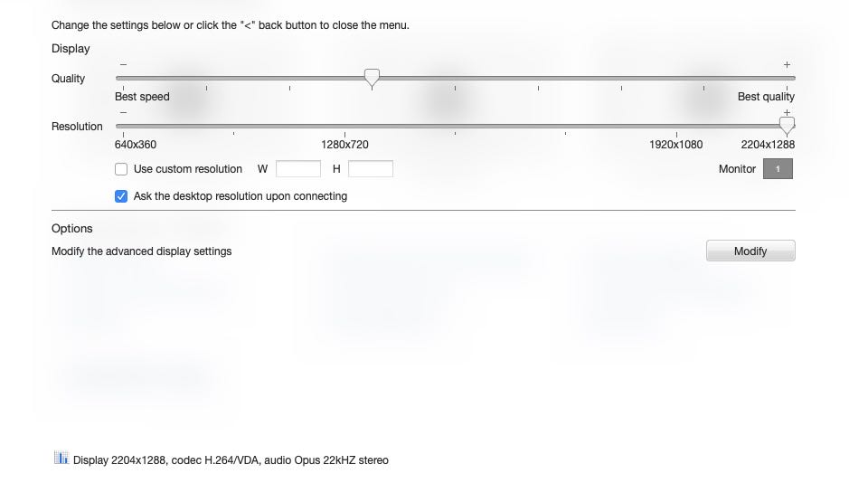

在Linux远程桌面里使用VTune
Table of Contents
UPDATE: vtune出了web server版本了，所以也不使用远程桌面去搞了。https://www.intel.com/content/www/us/en/develop/documentation/vtune-help/top/launch/web-server-ui.html
1. NXServer配置
从这个地方下载 https://www.nomachine.com/ server已经安装在Linux机器上了，client需要自己进行安装
1.1. Server配置
- 安装 `sudo rpm -i nomachine_7.7.4_1_x86_64.rpm`
- 修改配置文件 `sudo vim /usr/NX/etc/server.cfg`
- `NXPort 44000`
- `EnablePasswordDB 1`
- 添加nx用户 `sudo /etc/NX/nxserver –useradd vtune`
- 修改密码 `sudo /etc/NX/nxserver –passwd vtune`
- 这个密码和ssh密码是两个，这个密码存储在nx local db
- 重启服务 `sudo /etc/NX/nxserver –restart`
1.2. Client配置
为了安全我们需要自己进行ssh-tunnel `ssh -L "*:44000:localhost:44000" dorisdb` 这样在我们本地就可以通过44000端口链接到server上。
按照图示进行下面配置，用户名和密码是分别是自己之前设置的
似乎NXServer只支持一个用户登录上去，所以为了方便还是把密码设置成为了root/root
右下角按钮修改屏幕分辨率，这个很关键，不要桌面看起来有点丑陋

2. Linux上启动VTune
打开terminal, 使用路径 /opt/intel/oneapi/vtune/latest/bin64/vtune-gui 来启动